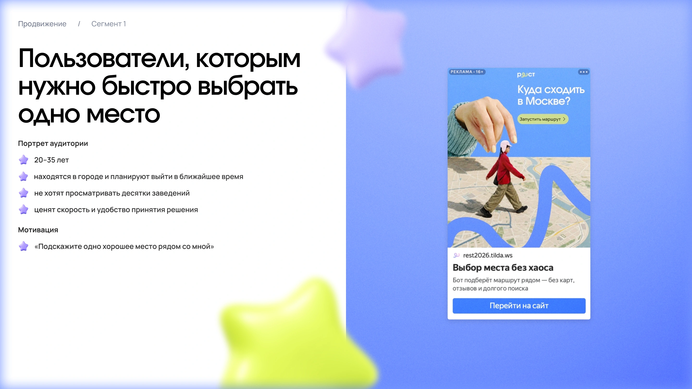

Подбор
Пять коротких вопросов о ситуации пользователя. Результат — одно место или маршрут.
Мобильное приложение и MVP в VK
Готовые городские маршруты по кафе, барам и ресторанам — под настроение, бюджет и компанию

Чтобы организовать вечер, человеку приходится сравнивать места, согласовывать интересы компании и собирать маршрут. Команда искала способ сократить эту подготовку и предложить готовый вариант под конкретную ситуацию.
Ключевая гипотеза: готовый сценарий отдыха поможет человеку быстрее перейти от выбора к плану вечера.
Я участвовала в исследовании пользователей вместе с командой. Из него выделили три потребности, которые повлияли на состав продукта.
| Что узнали | Как изменили решение |
|---|---|
| Люди уже собирают маршруты, но им не хватает удобного поиска | Добавили подбор по компании, формату, времени и бюджету |
| Досуг планируют под конкретное время и ситуацию | Усилили готовый план: куда пойти, в каком порядке и сколько времени заложить |
| Редактирование нужно не всем | Оставили базовые действия: добавить или убрать точку |
Главная ценность — помочь выбрать подходящий вариант и снять часть работы по планированию. Эту ценность дальше проверяли через MVP.
Моей зоной ответственности был MVP в формате VK-бота. Через него команда проверяла, нужен ли людям быстрый подбор одного заведения или готового маршрута.
Основной сценарий можно пройти в переписке: ответить на вопросы и получить рекомендацию. Такой формат даёт возможность проверить подбор до разработки мобильного приложения.

Пять коротких вопросов о ситуации пользователя. Результат — одно место или маршрут.
Можно изменить места в предложенном плане, сохранив сам сценарий прогулки.
Запрос отзыва помогает узнать, насколько рекомендация совпала с ожиданиями.


Я запускала рекламу, чтобы привлечь людей к первой версии сервиса. Объявления вели на промолендинг, который знакомил с предложением и направлял в VK-бота.
Быстро выбрать заведение без долгого просмотра списков и отзывов.
Получить последовательность мест и понятный план прогулки.
Помочь человеку, который организует встречу для друзей.

В запуске использовали Яндекс Директ и VK Рекламу. Оценивали стоимость и количество переходов, а также поведение посетителей на лендинге.
На привлечение трафика
Клика по объявлениям
Уникальных посетителя
| Показатель | Яндекс Директ | VK Реклама |
|---|---|---|
| Затраты | 1 293 ₽ | 1 131 ₽ |
| Клики | 769 | 394 |
| CTR | 2,34% | 1,61% |
Объявления привлекли пользователей: лендинг получил 867 посещений. В итогах кампании также отмечены быстрые уходы после перехода на сайт.
Следующий фокус — первый экран лендинга и переход к подбору. Успех следующего теста стоит оценивать по получению рекомендации и использованию маршрута.
Переходы на сайт и быстрые уходы подсветили этап для следующей проверки: от знакомства с сервисом до получения рекомендации. Я бы сфокусировалась на трёх шагах.
Сразу показывать пример результата: одно место или готовый вечер.
Сделать следующий шаг заметным и объяснить, что человек получит после анкеты.
Измерять начало и завершение анкеты, получение рекомендации и повторный подбор.

Я участвовала в разработке сценариев и части макетов. Ниже — три решения мобильной концепции, которые мы прорабатывали в команде.
Пользователю сложно сформулировать точный запрос на отдых.
Компания, настроение и кухня выбираются по шагам. Индикатор прогресса показывает, сколько осталось до подборки.

Пользователь уже знает ограничения и хочет сразу сузить выбор.
Бюджет, длительность, повод и кухня собраны по категориям. Выбранные условия остаются видны в результатах.

Предложенный план подходит не целиком: одно из мест хочется заменить.
Можно добавлять и убирать точки, менять порядок и проверять обновлённые время, расстояние и бюджет.


Компоненты, визуальный язык и оформление проекта, созданные командой.


Комиссия за бронь или заказ, размещение и специальные предложения.
Подписка на расширенные маршруты и брендированные подборки.


Расчёт для продвижения кафе, баров и ресторанов Москвы через Рест.
Общий годовой рынок
Доступный сегмент
Ориентир первого года

Расчётная модель партнёрской комиссии при бюджете привлечения 120 000 ₽.
| Показатель | Значение |
|---|---|
| Привлечённые пользователи | 4 000 |
| Контакты | 1 200 |
| Покупатели | 240 |
| Средний платёж | 432 ₽ |
| Покупки на клиента | 3 |
| LTV | 1 296 ₽ |
| CAC | 500 ₽ |